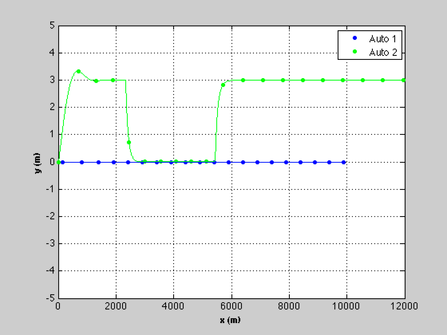
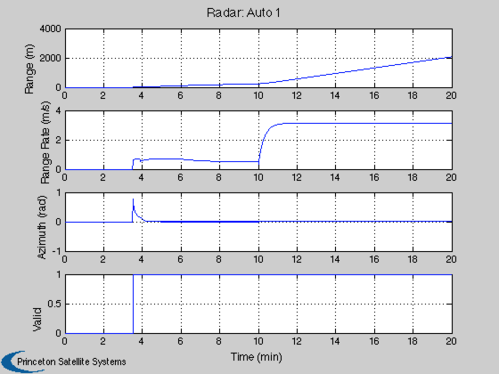
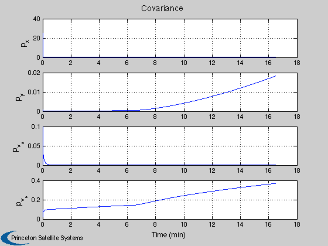
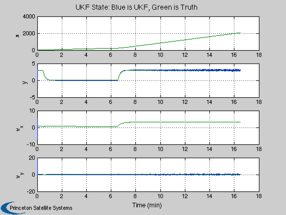
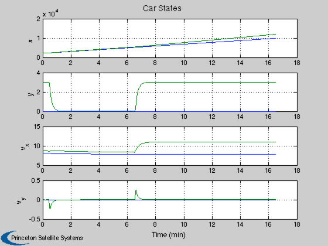
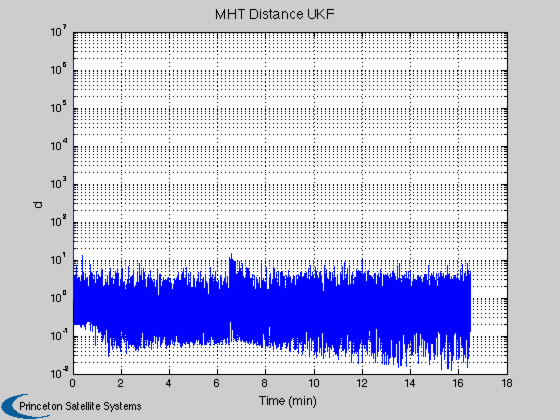

UKF automobile demo.
This models a car driving near a car with radar. The cars are at different speeds and the track car performs a passing and lane change maneuver.
The demo uses the Unscented Kalman Filter (UKF).
The simulation is run first and then the UKF estimates the trajectory of the tracked car. The demo also computes the MHT distance for the tracked car. The estimator starts with an estimated state of zero, meaning the tracked car and car with radar coincide. This leads to a large MHT distance at the start.
The car maneuvers and initial states can be modified.
------------------------------------------------------------------------- See also AutoRadar, AutomobilePassing, AutomobileLaneChange, RHSAutomobile, RHSAutomobileXY, AutoRadarUKF -------------------------------------------------------------------------
Contents
------------------------------------------------------------------------- Copyright (c) 2013 Princeton Satellite Systems, Inc. All rights reserved. -------------------------------------------------------------------------
Initialize
-----------
% Set the seed for the random number generators. % If the seed is not set each run will be different. %--------------------------------------------------- seed = 45198; rng(seed); % Car control %------------ laneChange = 1; % Clear the data structure %------------------------- clear d % Car 1 has the radar %-------------------- d.car(1).mass = 1513; % Mass (kg) d.car(1).delta = 0; % Steering angle (rad) d.car(1).r = [ 1.17 1.17 -1.68 -1.68;... -0.77 0.77 -0.77 0.77]; % Positions of the tires d.car(1).cDF = 0.25; % Front drag coefficient d.car(1).cDS = 0.5; % Side drag coefficient d.car(1).cF = 0.01; % Ordinary car tires on concrete d.car(1).radiusTire = 0.4572; % m d.car(1).torque = d.car(1).radiusTire*200.0; % N d.car(1).inr = 2443.26; % Inertia (kg-m^2) d.car(1).x = [0;0;0;0;0;0]; % Initial state d.car(1).fRR = [0.013 6.5e-6]; % Rolling resistance d.car(1).dim = [1.17+1.68 2*0.77]; d.car(1).h = 2/0.77; % Height dimension for drag d.car(1).areaF = d.car(1).dim(2)*d.car(1).h; d.car(1).areaS = d.car(1).dim(1)*d.car(1).h; d.car(1).errOld = 0; % For the control d.car(1).passState = 0; % For the control % Make the other car identical %----------------------------- d.car(2) = d.car(1); nAuto = length(d.car); % Velocity set points for the cars %--------------------------------- vSet = [12 13]; % Time step setup %---------------- dT = 0.1; tEnd = 20*60; tLaneChange = 10*60; tEndPassing = 6*60; n = ceil(tEnd/dT); % Car initial states %------------------- x = [140; 0;12;0;0;0;... 0; 0;11;0;0;0]; % Radar - the radar model has a field of view and maximum range % Range drop off or S/N is not modeled %-------------------------------------------------------------- m = length(x)-1; dRadar.kR = [ 7:6:m; 8:6:m]; % State position indices dRadar.kV = [ 9:6:m;10:6:m]; % State velocity indices dRadar.kT = 11:6:m; % State yaw angle indices dRadar.noise = 0.1*[0.02;0.001;0.001]; % [range; range rate; azimuth] dRadar.fOV = pi/4; % Field of view dRadar.maxRange = inf; dRadar.noLimits = 0; % Limits are checked (fov and range) % Plotting %--------- yP = zeros(3*(nAuto-1),n); vP = zeros(nAuto-1,n); xP = zeros(length(x)+2*nAuto,n); s = 1:6*nAuto;
Simulate
---------
t = (0:(n-1))*dT; fprintf(1,'\nRunning the simulation...'); for k = 1:n % Plotting %--------- xP(s,k) = x; j = s(end)+1; for i = 1:nAuto p = 6*i-5; d.car(i).x = x(p:p+5); xP(j:j+1,k) = [d.car(i).delta;d.car(i).torque]; j = j + 2; end % Get radar measurements %----------------------- dRadar.theta = d.car(1).x(5); dRadar.t = t(k); dRadar.xR = x(1:2); dRadar.vR = x(3:4); [yP(:,k), vP(:,k)] = AutoRadar( x, dRadar ); %------------------ % Implement Control %------------------ % For all but the passing car control the velocity %------------------------------------------------- d.car(1).torque = -10*(d.car(1).x(3) - vSet(1)); % The active car %---------------- if( t(k) < tEndPassing ) d.car(2) = AutomobilePassing( d.car(2), d.car(1), 3, 1.3, 10 ); elseif ( t(k) > tLaneChange && laneChange ) d.car(2) = AutomobileLaneChange( d.car(2), 10, 3, 12 ); else d.car(2).torque = -10*(d.car(2).x(3) - vSet(2)); end % Integrate %---------- x = RK4(@RHSAutomobile, x, dT, 0, d ); end fprintf(1,'DONE.\n'); % The state of the radar host car %-------------------------------- xRadar = xP(1:6,:); % Plot the simulation results %---------------------------- NewFig( 'Auto' ) kX = 1:6:length(x); kY = 2:6:length(x); c = 'bgrcmyk'; j = floor(linspace(1,n,20)); [t, tL] = TimeLabl( t ); for k = 1:nAuto plot(xP(kX(k),j),xP(kY(k),j),[c(k) '.']); hold on end legend('Auto 1','Auto 2'); for k = 1:nAuto plot(xP(kX(k),:),xP(kY(k),:),c(k)); end XLabelS('x (m)'); YLabelS('y (m)'); set(gca,'ylim',[-5 5]); grid % Plot the radar results but ignore cars that are not observed %------------------------------------------------------------- for k = 1:nAuto-1 j = 3*k-2:3*k; sL = sprintf('Radar: Auto %d',k); b = mean(yP(j(1),:)); if( b ~= 0 ) Plot2D(t,[yP(j,:);vP(k,:)],tL,{'Range (m)' 'Range Rate (m/s)' 'Azimuth (rad)' 'Valid'},sL); end end
Running the simulation...DONE. 
Implement UKF
--------------
% Covariances %------------ r0 = diag(dRadar.noise.^2); % Measurement 1-sigma q0 = [1e-7;1e-7;.1;.1]; % The baseline plant covariance diagonal p0 = [5;0.4;1;0.01].^2; % Initial state covariance matrix diagonal % Each step is one scan %---------------------- ukf = KFInitialize('ukf','f',@RHSAutomobileXY,'alpha',1,... 'kappa',0,'beta',2,'dT',dT,'fData',struct('f',0),... 'p',diag(p0),'q',diag(q0),'x',[0;0;0;0],... 'm',[0;0;0;0]); % Size arrays %------------ k1 = find( vP > 0 ); k1 = k1(1); % Limit to when the radar is tracking %------------------------------------ n = n - k1 + 1; yP = yP(:,k1:end); xP = xP(:,k1:end); pUKF = zeros(4,n); xUKF = zeros(4,n); dMHTU = zeros(1,n); t = (0:(n-1))*dT; for k = 1:n % Prediction step %---------------- ukf.t = t(k); ukf = UKFPredict( ukf ); % Update step %------------ ukf.y.data = yP(:,k); ukf.y.param.hFun = @AutoRadarUKF; ukf.y.param.hData = struct('theta',0); ukf.y.param.r = r0; ukf = UKFUpdate( ukf ); % Compute the MHT distance %------------------------- dMHTU(1,k) = MHTDistanceUKF( ukf ); % Store for plotting %------------------- pUKF(:,k) = diag(ukf.p); xUKF(:,k) = ukf.m; end % Transform the velocities into the inertial frame %------------------------------------------------- for k = 1:n c = cos(xP(5,k)); s = sin(xP(5,k)); cCarToI = [c -s;s c]; xP(3:4,k) = cCarToI*xP(3:4,k); c = cos(xP(11,k)); s = sin(xP(11,k)); cCarToI = [c -s;s c]; xP(9:10,k) = cCarToI*xP(9:10,k); end % Relative position %------------------ dX = xP(7:10,:) - xP(1:4,:);
Plotting
---------
[t,tL] = TimeLabl(t); % Plot just select states %------------------------ k = [1:4 7:10]; yL = {'p_x' 'p_y' 'p_{v_x}' 'p_{v_y}'}; Plot2D(t,pUKF, tL,yL,'Covariance'); Plot2D(t,[xUKF;dX], tL,{'x' 'y' 'v_x' 'v_y'},'UKF State: Blue is UKF, Green is Truth','lin', ... {'[1 5]' '[2 6]' '[3 7]' '[4 8]'}); Plot2D(t,xP(k,:), tL,{'x' 'y' 'v_x' 'v_y'},'Car States','lin',{'[1 5]' '[2 6]' '[3 7]' '[4 8]'}); Plot2D(t,dMHTU, tL,'d','MHT Distance UKF','ylog'); % PSS internal file version information %--------------------------------------   